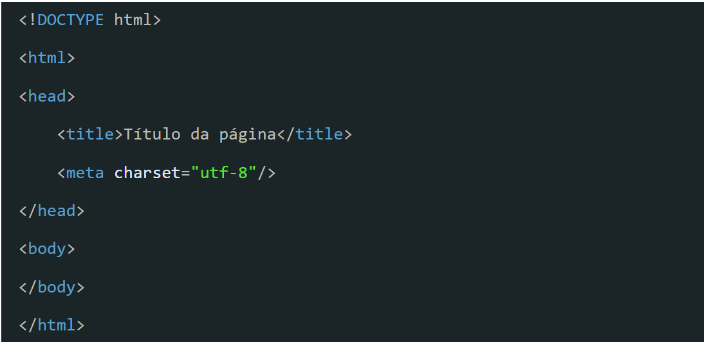
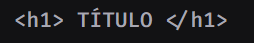
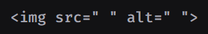
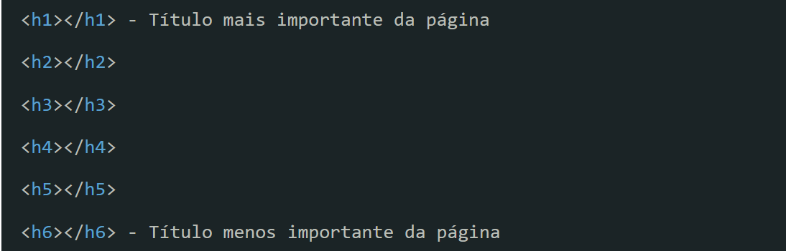
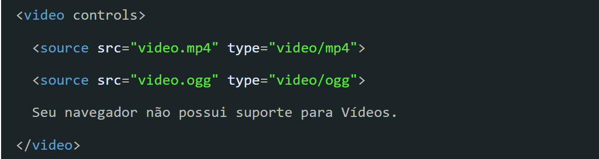

Uma das ferramentas básicas que irá ser necessária é um editor de texto, mas não só um editor qualquer, você precisa de um editor com mais funcionalidades para a programação, o que eu uso aqui é o Visual Studio Code.
Como instalar o Visual Studio Code no Windows
Primeiramente você precisa clicar nesse link, na nova aba que se abriu, clique o botão "Download for Windows" e aguarde completar o download. Terminado o download abra o arquivo, aceite os termos e continue clicando em "próximo" até começar a instalação, e terminando a instalação apenas clique em "finalizar". E o VSCode está instalado em sua máquina.
As Ferramentas para desenvolvedores do Google Chrome permitem analisar rapidamente o conteúdo/recursos de uma página da Web. Isso ajuda a verificar suas tags do Campaign Manager 360.
Vou te mostrar 3 formas de acessar as Ferramentas para Desenvolvedores
Você pode acessar a ferramenta do desenvolver usando a tecla F12
Passo a passo I:
Clique com o botão direito do mouse em uma página e selecione "Inspecionar elemento". O código HTML do elemento clicado será exibido.
Selecione Visualização > Desenvolvedor > Ferramentas para desenvolvedores.
Use o atalho "Alt + Command + I".
Passo a passo II:
Indo em personalizar e controlar o Google Chrome
Clique em mais ferramentas, depois clique em ferramenta do desenvolvedor
HTMLé um acrônimo para Hypertext (hipertexto) Markup (marcação) Language (linguagem), ela não é uma linguagem de programação em si, porém é uma linguagem na forma de escrever, tendo sintaxe e semântica, Hypertext é uma marcação especifica que nos leva a outro texto, isso mais no passado, agora sendo relacionado a imagens, a videos. Bastante simples usar o HTML, podemos ver ele clicando com o botão direito na pagina e selecionar a opção "view Page Source".
Para utilizar as Tags HTML e construir uma boa página web você precisa da estrutura base para iniciar o trabalho.

É com essa estrutura que você começa qualquer trabalho com HTML.
A seguir vou falar mais sobre cada uma das estruturas que foram aqui citadas.
– Todo o trabalho feito em HTML deve conter essa tag, já que ela vai indicar todo o caminho a ser trilhado, além, é claro, de reconhecer cada tag que vai ser incluída. Se você não indicar essa tag no início e no final, qualquer tipo de atributo não vai ser reconhecido;
– A Tag head é o cabeçalho do seu código. Normalmente não tem nenhum tipo de utilidade prática na página, mas ajuda a delimitar o início do trabalho feito com HTML;
– Essa é a tag html mais importante, pois ela vai determinar o título da página. Essa é uma das tags que todos que trabalham com SEO devem estar sempre atentos;
– Ela permite a inserção de metadados no seu documento, e para isso é importante utilizar charset=”UTF-8″, para que as informações inseridas estejam dentro do padrão latino americano. Em outras palavras, é o reconhecimento dos atributos que serão inseridos depois.;
– Com tudo inserido, é hora de colocar a tag body, que é onde você vai colocar finalmente as informações referentes ao código a ser trabalhado, ou seja, está tag representa o corpo do documento.
As Tags funcionam da seguinte forma:
Você faz a abertura delas, coloca o nome da Tag e as fecha como no exemplo. No caso dessa Tag, seu conteúdo é a de título, juntando a abertura, fechamento e o conteúdo, teremos um Elemento HTML.

Há também Elementos vazios que diferente do exemplo acima não se fecha daquela forma, mas assim:
Essa sendo para imagem possuindo atributos, que veremos mais tarde seu funcionamento.

Atributos das Tags
Atributos das Tags são palavras especiais usadas dentro da tag de abertura para controlar o comportamento do elemento.
Algumas utilizadas são:
class=”…“ – Indica classe ao elemento, podendo ser utilizada em um ou mais elementos;
id=”…“ – Indica um id ao elemento, que pode ser atribuído a somente um ;
style=”…” – Inclusão de elementos CSS, que vão dar estilos ao html;
Elaborar um título de um artigo, seja título principal ou secundário, parte de um trabalho feito com Tags HTML, e por isso também é uma forma de você conseguir explorar todas as possibilidades de como organizar o conteúdo.
Elas são apresentadas da seguinte maneira:

Entendendo então como você começa a construir um conteúdo escrito, é preciso também pensar em estratégias para o estabelecimento de textos.
Eles servem para ornamentar o texto ou para indicar alguns detalhes que precisam ser de fato destacados.
Alguns deles são:
– É a tag que vai definir o início de um parágrafo. Onde o seu texto vai começar;
– São tags muito próximas da mas possuem uma função diferente. Ela é utilizada para outros elementos como imagens, legendas ou informações que vão somar ao texto. Formam uma espécie de container;
Transforma todo o texto dentro desse intervalo em negrito;
– Transforma todo o texto dentro desse intervalo em itálico;
– Tag de HTML utilizada para quebra de linha. Não necessita de fechamento.
As tags de listas são indicadas para a organização de informações que são pensadas para determinar uma ordem, ou não necessariamente.
Para uma lista ordenada você utiliza o atributo "ol" que faz uma lista ordenada, e o item "li" serve para organizar as informações conforme você quer.:
As tags de link também são muito importantes, e praticamente ajudaram a montar a internet que temos hoje, especialmente a construção dos conteúdos e conexões entre eles.
Essa tag pode linkar qualquer coisa, dentro da mesma página, ou mesmo alguns elementos que não são da mesma página. Isso já é uma forma de conseguir fazer parcerias e até dar mais visibilidade para o seu conteúdo.
Por este motivo é interessante o seu uso, e até mesmo indicado.
Elas são definidas por e podem ser feitas assim:
As tags de multimídia também são essenciais para montar uma boa página visualmente para o seu público.
Elas podem incluir imagens, vídeos, sons, iframes, e qualquer outro tipo de multimídia que pode ser incorporado.
Para imagens é utilizada a linguagem , sem fechamento. Como no exemplo:
Como colocar vídeos no seu HTML
Para vídeos temos a seguinte sequência:

Note que tem o início "source src=…" que é a indicação de onde vão ser pegos os vídeos,e duas “types”. Isso é proposital para que se tenham duas opções de reprodução e possa atingir mais pessoas. Ao final é indicado o texto “Seu navegador não possui suporte para Vídeos” caso não tenha recursos para a reprodução.